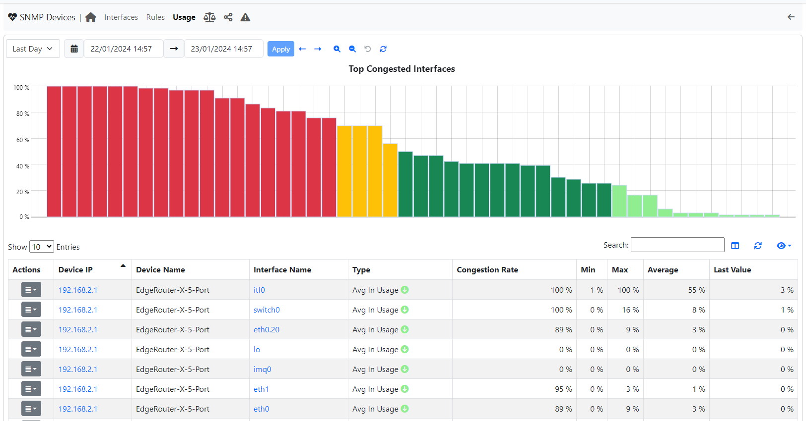
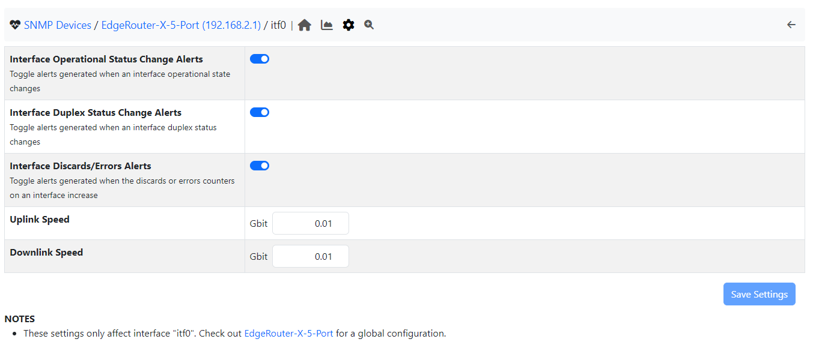
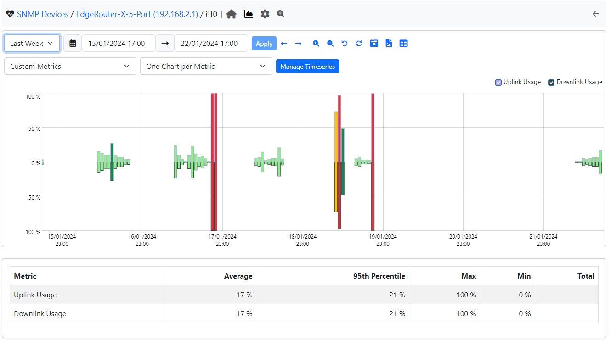
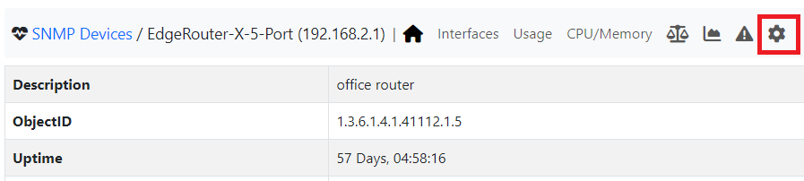
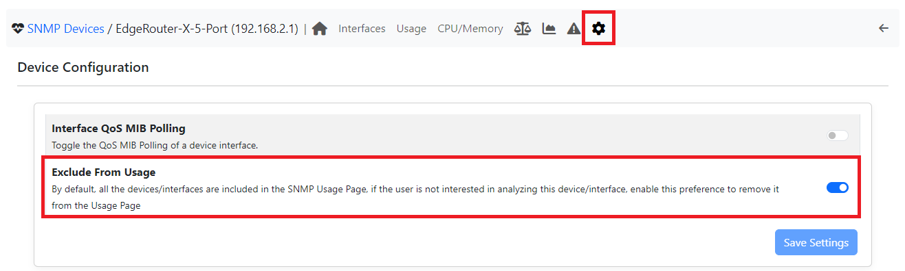
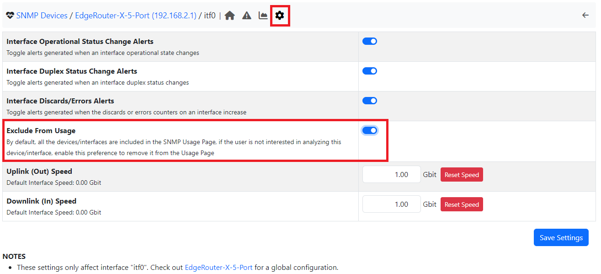
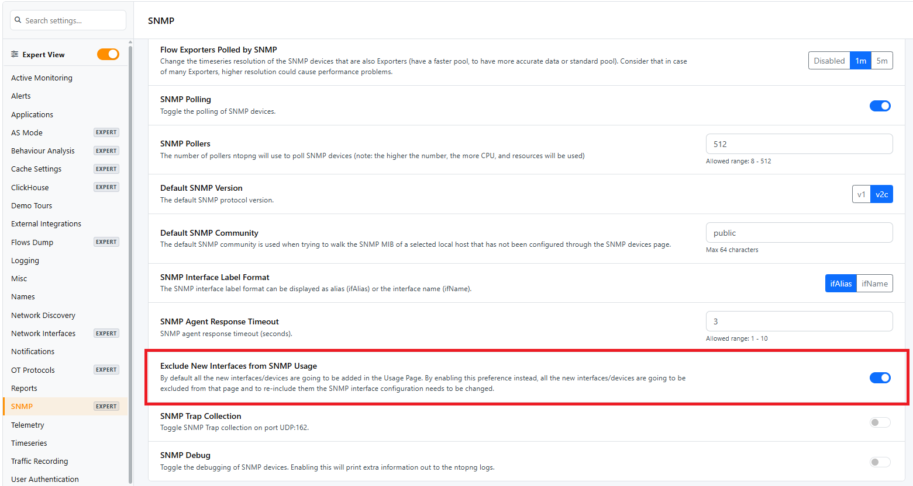

SNMP Использование
ntopng имеет возможность отслеживать процент использования каждого интерфейса для каждого устройства SNMP.
Примечание
Требуется лицензия Enterprise L или выше.
Предупреждение
Обязательно необходимо включить временную серию SNMP; тогда станет доступна новая страница использования.

Здесь можно понять перегруженные интерфейсы.
На диаграмме показаны только наиболее перегруженные интерфейсы SNMP; интерфейс считается перегруженным, если используется не менее 75% канала. Информация о скорости соединения (вверх и вниз) в большинстве случаев предоставляется с помощью SNMP, однако иногда скорость соединения неверна. Однако его можно настроить вручную, перейдя на страницу конфигурации интерфейса SNMP.

Учитывая временной интервал (выбираемый над диаграммой наиболее перегруженных интерфейсов), процент перегрузки рассчитывается путем сложения различных процентов использования (таймсерия, полученная путем сравнения трафика и настроенной максимальной скорости канала) интерфейса и деления его на количество точек.
Примечание
Будучи перегрузкой, в зависимости от временных рядов использования она может иметь максимум 1 точку за 5 минут (временные ряды использования обновляются каждые 5 минут).
Вместо этого в таблице показан уровень перегрузки и другая базовая информация об устройствах. Нажав кнопку «Действие», можно перейти к настройке интерфейса (в случае неправильной настройки) или напрямую перейти к временной серии использования.
Примечание
Другой способ перейти к таймсерии — щелкнуть соответствующую полосу на диаграмме.

Обратите внимание, что как временные ряды использования, так и диаграммы «Наиболее перегруженные интерфейсы» имеют столбцы разного цвета в зависимости от процентного содержания:
от 0 до 24 полоса имеет светло-зеленый цвет
между 25 и 49 полоска имеет зеленый цвет
между 50 и 75 полоска имеет желтый цвет
между 76 и 100 полоса имеет красный цвет
Исключить интерфейсы или устройства
По умолчанию все устройства/интерфейсы SNMP включены на страницу «Использование»; однако можно исключить целые устройства или отдельные интерфейсы (если они не интересны). Перейдя на страницу сводной информации об устройстве (нажав на устройство SNMP), щелкните страницу конфигурации.

Здесь включите настройку «Исключить из использования».

То же самое можно сделать и с интерфейсами, перейдя к сводке интерфейса и щелкнув страницу конфигурации.

Автоматическое исключение
Более того, можно автоматически исключить все устройства/интерфейсы SNMP, недавно добавленные в ntopng. Для этого необходимо включить предпочтение; перейдите в «Настройки», «Настройки», SNMP (см. изображение ниже) и включите настройку «SNMP Исключить новые интерфейсы из использования». С этого момента все вновь добавленные устройства (с интерфейсами) будут автоматически исключаться из списка SNMP «Использование».

Однако по-прежнему можно снова включить исключенные интерфейсы/устройства, перейдя к настройкам и отключив относительные предпочтения (так же, как и их отключение).